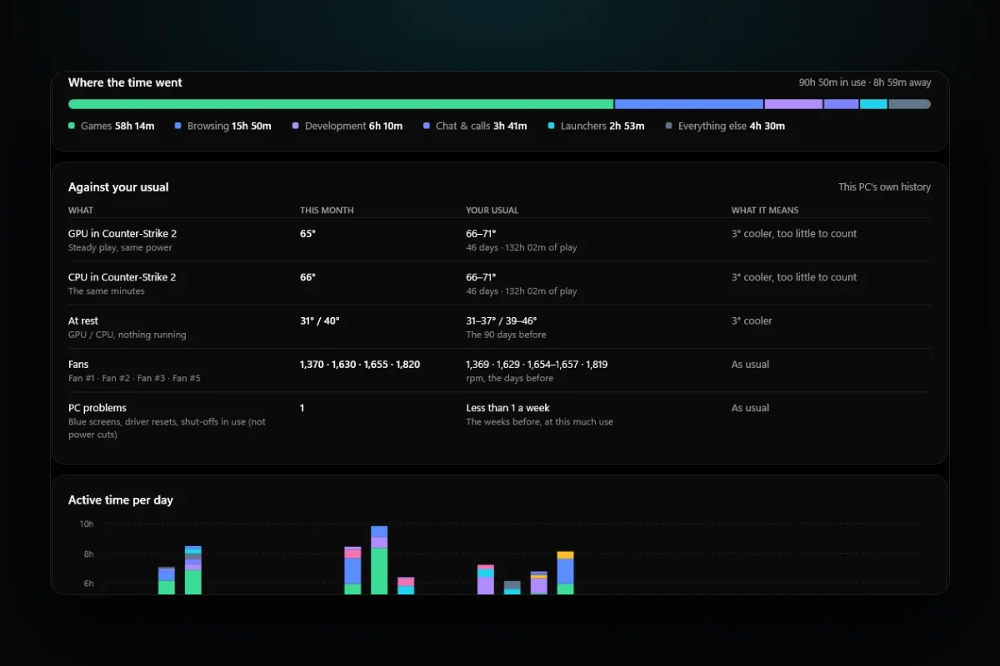
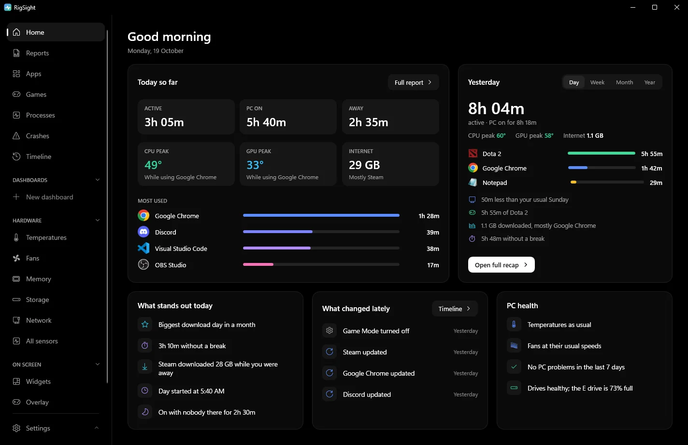

PC problems · Temperatures
PC overheating while gaming, or just warm? How RigSight tells
How RigSight tells a PC overheating while gaming from one that is only warm, by setting each game against its own usual. Why PCs get hot in games, and how to stop it, from dust and airflow to frame caps, fan curves and thermal paste.

The short answer
A PC overheating while gaming is usually dust, poor airflow, or a game running far more frames than your screen shows. Clean the filters and coolers, give the case room to breathe, and cap the frame rate. Check fan curves and paste after that. Compare the same game before and after each change.
Your fans roar, the case is warm to the touch, and the frame rate sags after twenty minutes of play. That feels like a PC overheating while gaming, but a hot PC and an overheating PC are different things. A PC is meant to get warm in games. The question is whether yours runs hotter than it used to in the same game, and RigSight answers that from your PC's own history.
How RigSight caught it
The picture at the top is RigSight's demo PC, not mine. Its Reports page for October has a table called Against your usual. In Counter-Strike 2, the game it played most that month, its graphics card ran at 65° in steady play. Its usual in that game was 66 to 71°, from 46 days and 132 hours of play before. RigSight called that "3° cooler, too little to count". The CPU in the same minutes read the same way, the fans were at their usual speeds and PC problems were as usual. That PC gets warm in games. It isn't overheating.
The comparison is strict on purpose.
- It only uses steady play. That means the graphics card at least 80% busy, after the first 10 minutes, so the cooler has warmed up.
- Both sides need the same GPU power, within 15%. If the game ran much heavier, RigSight doesn't compare it at all.
- It reads the PC at rest on both sides, so a warmer room isn't blamed on the PC.
- A game only reads hotter when it is at least 5° warmer, and at least 3° more than the change at rest, with an hour of play now and two hours over three days before.
I built it that strict after RigSight once warned me that a healthy fan was clogging. That story is in The day RigSight told me my healthy fan was clogged.
When a game does run hotter, RigSight says so in a few places. The PC health card on Home gets one line naming the game, the part, how many degrees hotter at the same power, and the usual range. With no change it says "Temperatures as usual". On the Games page every play keeps its GPU temperature and power, and a play at the usual power says how far it was from that game's usual. So you can see which evening it started.

If the PC shut off in a game, the crash's close-up says whether it was running hot just before. It also points out that a power cut at the same moment would look the same. You can turn on Temperature alerts under Notifications in Settings to get a warning that names the game when a part stays over your limit. CPU temperature needs RigSight running with admin rights. RigSight is free and open source.
Why a PC overheats while gaming
A graphics card can draw a few hundred watts in a game, and nearly all of that power turns into heat inside the case. Warm air out of the back and fans that speed up are signs the cooling is working.
Each part has a maximum temperature set by its maker, and it changes from model to model. NVIDIA lists 85 to 93°C for its recent GeForce cards. AMD lists 89 to 95°C for recent Ryzen CPUs, and Intel lists 100°C for the Core i9 14900K and 105°C for the Core Ultra 9 285K. The posts on normal GPU temperature while gaming and normal CPU temperature while gaming list the figures by model.
Your PC is really overheating when one of these is true.
- A part sits at its maker's maximum during play and the frame rate drops as it gets there.
- The PC shuts off or restarts in games, and the temperatures just before were at the limit.
- The same game, at the same settings, runs clearly hotter than it used to.
When it is, the cause is usually one of these. Dust packed into a cooler's fins is the most common reason a PC that used to run cool now runs hot. A case that can't move air out, a game drawing far more frames than the screen shows, a fan that has stopped, a quiet fan curve, a badly mounted cooler, motherboard power settings past the maker's guidelines and old thermal paste make up most of the rest.
If none of the signs fit, your PC is probably just warm. Loud fans alone aren't a sign of overheating, and PC fans loud while gaming covers that case. If the frame rate drops but temperatures are fine, see FPS drops in games instead.
How to stop your computer from overheating when playing games
Do these in order, and change one thing at a time, so you know what helped.
- Clean out the dust. Shut down Windows, switch off the power supply and unplug the PC. Take out and rinse or brush the dust filters, usually at the front, top and bottom of the case. Blow dust out of the CPU cooler, the graphics card and any radiator with compressed air, and hold each fan still while you do so it doesn't spin up. Let anything you washed dry fully before it goes back in.
- Give the case room to breathe. Air should come in at the front or bottom and leave at the back or top. Most fans have small arrows on the frame that show the airflow. Pull the PC out of a desk cubby, keep it a hand's width from the wall, and don't put it on carpet if the power supply draws air from underneath. For a quick test, play with the side panel off for 20 minutes. If temperatures drop a lot, another intake fan or a clearer path will help more than anything you do to the coolers.
- Cap your frame rate. If a game runs at 250 frames per second on a 144 Hz screen, your graphics card is working flat out for frames you never see. A cap a little under your screen's refresh rate often cuts the heat noticeably. Many games have a frame rate limit in their own video settings, so use that first. On NVIDIA, open the NVIDIA Control Panel, go to Manage 3D settings and set Max Frame Rate. On AMD, Radeon Chill in AMD Software lowers the frame rate when there's little movement on screen, and AMD says it saves power and helps lower GPU temperature.
- Check every fan spins. Look through the side panel while a game is running. Every case fan, the CPU cooler fan and every fan on the graphics card should be turning. Many graphics cards stop their fans when cool, so check under load. If one stays still, see GPU fan not spinning.
- Set a better fan curve. A fan curve decides how fast fans spin at each temperature, and some motherboards ship with quiet curves that let the CPU get hot before the fans react. Change the case and CPU fan curves in the BIOS or the motherboard maker's app, and the graphics card's curve in the card maker's app. Raise the speed a little at the temperatures you see in games, then test again.
- Check the cooler and BIOS settings. Intel's own checklist for a CPU that runs hot asks you to confirm the cooler is rated for your CPU, that it's mounted properly with the protective film removed from its base, and on a liquid cooler that the pump and radiator fans are plugged into the right headers. Intel also notes that some motherboards ship with power settings that go past its guidelines, and loading the BIOS defaults can bring the temperature down. Change BIOS settings only if you're comfortable, and note what you change.
- Replace the thermal paste last. Paste dries out over years. If the PC is old and the steps above didn't help, new paste on the CPU can bring the temperature down. Repasting a graphics card is a bigger job and can void the warranty, so check that first. A big gap between the GPU's main reading and its hot spot is the clearest sign a card needs it, as explained in GPU hotspot temperature.
Laptops run hotter than desktops by design, and the maker sets their limits. For a laptop overheating when gaming, play on a desk, not a bed or your lap, so the vents underneath stay open. Clean the vents with short bursts of compressed air. Cap the frame rate, and try the maker's balanced mode to see whether the temperature falls more than the frame rate does. A stand that lifts the back edge helps the fans pull in air.
Test each fix like for like. Use the same game, the same settings and the same scene or map. Play long enough for temperatures to level off, about 10 to 15 minutes, and note how warm the room is, because a room 5°C warmer makes every part run warmer too. A light game in winter against a heavy one in summer will always look like your PC got worse.
Start with the dust and the frame cap tonight. Then play your usual game for 15 minutes and compare the highest temperatures with what you had before.
Questions people ask
Is it normal for a PC to get hot when gaming?
Yes. Games load the graphics card and CPU hard, and both turn that power into heat. GPU temperatures in the 60s to 80s °C and CPU temperatures in the 60s to mid 80s °C are common. It's overheating when a part sits at its maker's maximum and slows down, or the PC shuts off.
Why does my PC get hot when I play games?
A graphics card can draw a few hundred watts in a game, and almost all of it ends up as heat inside the case. If the case can't move that heat out fast enough, everything inside warms up. Dust, blocked vents and uncapped frame rates make it worse.
How do I stop my laptop overheating when gaming?
Play on a hard, flat surface so the vents underneath aren't blocked, clean the vents, cap the frame rate and use the maker's balanced or quiet mode. A stand that lifts the back edge helps air reach the fans.
Can overheating make my PC shut off while gaming?
Yes. When a part reaches a temperature it can't safely run at, the PC can switch itself off to protect it. A sudden power cut looks the same afterwards, so check the temperatures just before the shut-off before blaming heat.